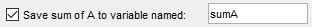
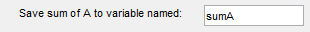

export2wsdlg
Create dialog box for exporting variables to workspace
Syntax
Description
export2wsdlg(
creates a modal
dialog box with a series of check boxes and edit fields. For each check box, there
is a corresponding edit field. The arguments are:labels,vars,vals)
labels– the labels for the check boxes.The number of labels determines how many check boxes and edit fields appear in the dialog box. One edit field appears after each check box label; for example:

vars– the default variable names that appear in the edit fields, such assumAshown in the preceding image.vals– the values to store in the variables.
The labels, vars, and
vals must specify the same number of items. If
labels, vars, and
vals each specify one item, then the dialog box displays a
label and an edit field only. For example:

export2wsdlg(
specifies a cell array of functions and optional arguments that calculate, and then
return the values to export to labels,vars,vals,title,defs,helpfcn,flist)vars. When you specify an
flist, MATLAB® uses
it instead of vals. However, you must specify the
vals argument as a syntax placeholder. The
flist must be the same length as
labels.
returns the f = export2wsdlg(___)Figure object in which the dialog box displays to
f. You can request this output with any of the input argument
combinations in the previous syntaxes.
[
returns f,tf] = export2wsdlg(___)tf as 1 (true) if the user clicks
OK, or 0 if the user closes the dialog
box by clicking Cancel or the close button (X) in the dialog
box title bar. When tf is 0, f is returned as
an empty array ([]). The export2swdlg
function does not return until the user closes the dialog box.
Examples
Input Arguments
Output Arguments
More About
Tips
MATLAB program execution continues even when a modal Export to Workspace dialog box is active. To block program execution until the user closes the dialog box, use the
uiwaitfunction.
Version History
Introduced in R2006b